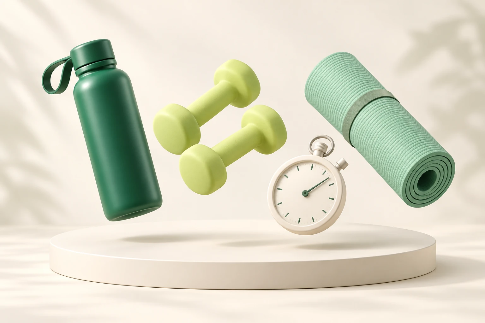

Tu ritmo. Tu progreso.
Hoy también
cuenta.
Registra tus sesiones, mira tu constancia y encuentra tu propio ritmo. Cada paso tiene su lugar.
Registrar una sesión +
Un vistazo a tu semana
Así te has movido
A tu medida
Tus metas
Cada día tiene su historia
Tu calendario
Día con una sesión registrada
El detalle de tu día
Un paso más
Haz espacio para tu actividad.
Registra tu sesión
Menos pasos, más tiempo para ti
Tus rutinas guardadas
Crea accesos rápidos con la actividad y duración que tú elijas.
Crear mi propia rutina +
Concéntrate en tu momento
Tu temporizador
Listo para empezar00:30
Configura tus intervalos
Ajusta los tiempos a tu rutina. Al terminar puedes registrar la sesión; no se guarda automáticamente.
Tu recorrido
Historial de sesiones
Sesión eliminada.